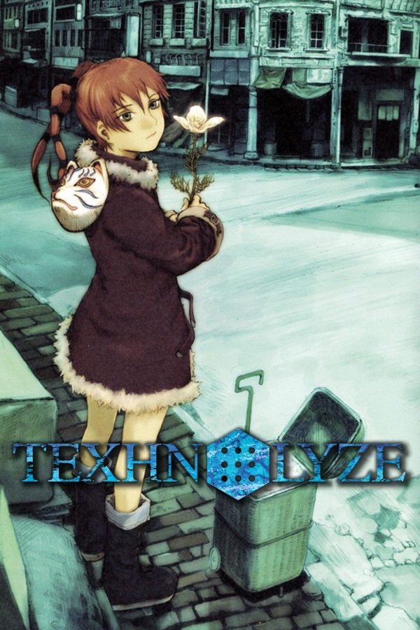
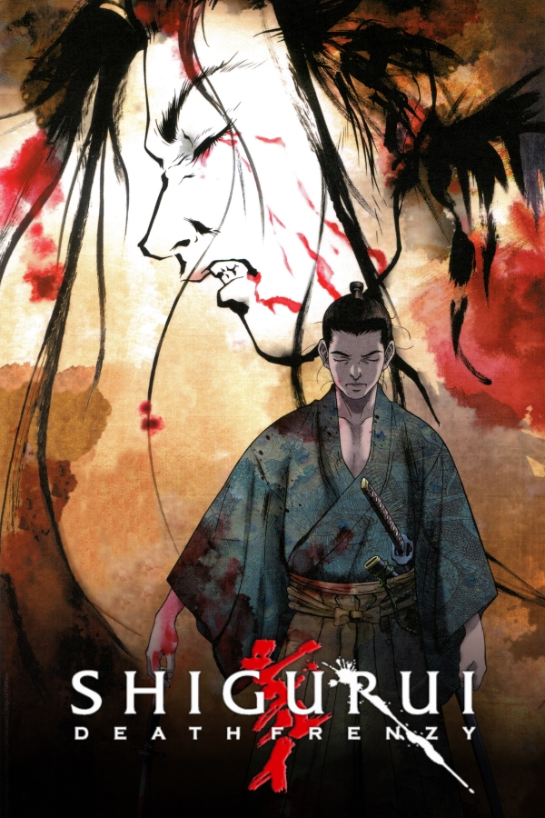

Completo
Em andamento
Cancelado

Completo
Texhnolyze
Numa cidade subterrânea decadente, facções em guerra e um futuro podre cruzam-se com a mutilação, a identidade e o colapso humano.

Em andamento
Shigurui: Death Frenzy
Japão feudal e começa com um torneio ordenado por Tokugawa Tadanaga, onde, ao contrário do habitual, os combates são feitos com espadas reais.
Fujiki Gennosuke, um espadachim sem um braço, e Irako Seigen, um samurai cego, ambos ligados à escola de Iwamoto Kogan.
A série recua depois no tempo para mostrar como os dois chegaram àquele confronto, num ambiente marcado por violência extrema, obsessão, honra deformada e decadência moral.
Lançados: 0
Total: 12
 Em andamento
Em andamento
Nome
Sinopse
Lançados: 0
Total: 0
 Cancelado
Cancelado
Nome
Sinopse
Lançados: 0
Total: 0
Nota: Toda a informação detalhada sobre os lançamentos, bem como o acesso ao conteúdo disponível da fansub, é centralizada através do nosso grupo do Telegram.
© 2026 Saudade Negra Subs. Todos os direitos reservados.